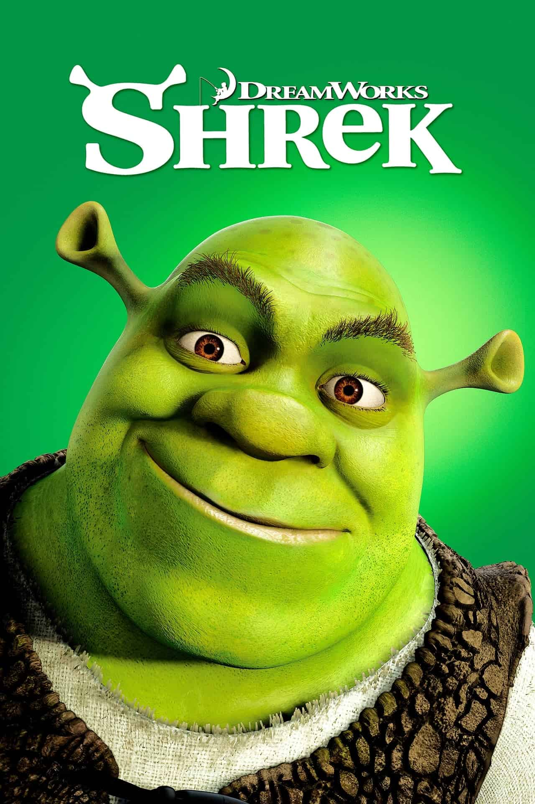
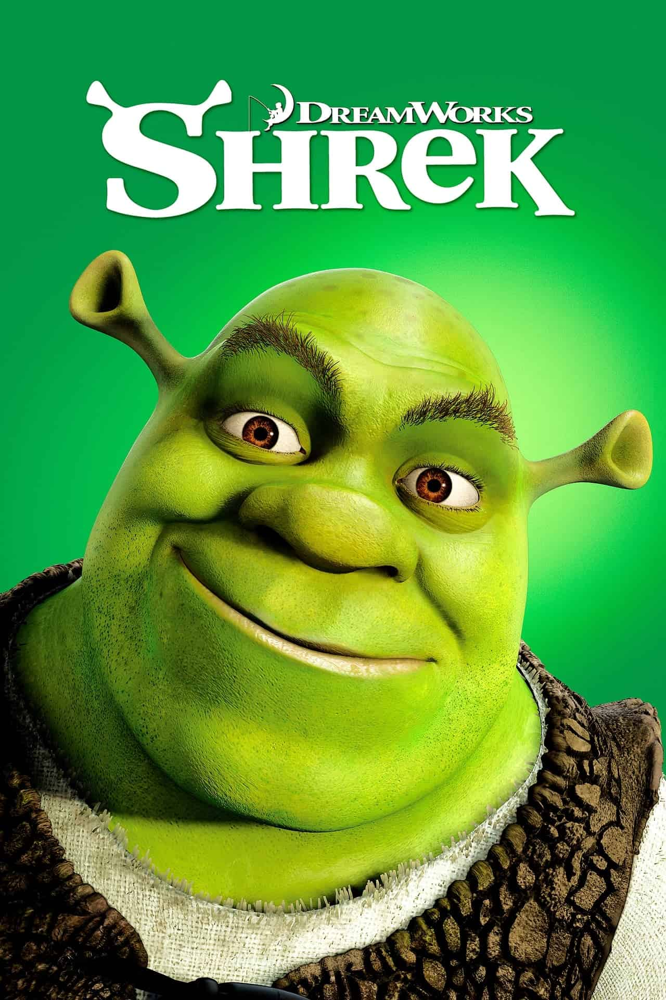

Detalles
Quizás también te guste
PG +12 | 2h 9m | 2018
Acción/Aventura
Owen y Claire intentan salvar a los dinosaurios que quedan en la isla ante el peligro de erupción de un volcán. Allí se encuentran nuevas especies de dinosaurios gigantes mientras descubren una conspiración que amenaza la vida del planeta.

 
